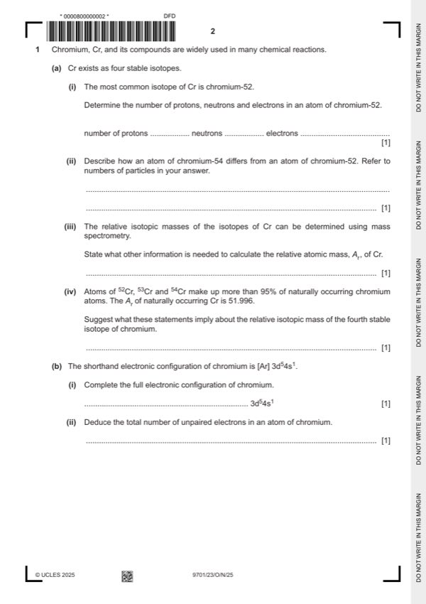

Question 1

Original paper page 2
Part 1(a)(i) — solution
24 protons 28 neutrons 24 electrons 1
Mark points
- Include the ideas shown in the solution above.
Part 1(a)(ii) — solution
(54Cr has two) more neutrons (than 52Cr) 1
Mark points
- Include the ideas shown in the solution above.
Part 1(a)(iii) — solution
(relative) abundance (of each isotope) 1
Mark points
- Include the ideas shown in the solution above.
Part 1(a)(iv) — solution
The fourth isotope has any value of RIM less than 51.996 1
Mark points
- Include the ideas shown in the solution above.
Part 1(b)(i) — solution
- 1s2 2s2 2p6 3s2 3p6 (3d5 4s1) 1
Mark points
- 1s2 2s2 2p6 3s2 3p6 (3d5 4s1) 1
Part 1(b)(ii) — solution
Answer: 6 1
6 1
Mark points
- Correct result: 6 1
Part 1(c)(i) — solution
Cr / Cr2O72– AND it gains electrons 1
Mark points
- Include the ideas shown in the solution above.
Part 1(c)(ii) — solution
(+)4 1
Mark points
- Include the ideas shown in the solution above.
Part 1(c)(iii) — solution
Due to an issue with question 1(c)(iii), the question has been removed from the question paper. N/A
Mark points
- Include the ideas shown in the solution above.
Part 1(c)(iv) — solution
Answer: AND methanal has permanent dipole–permanent dipole (and id-id) forces
- [M1] CO2 has only instantaneous / temporary dipole–induced dipole forces 2
- [M2] IMF’s in methanal are stronger than IMF’s in CO2
Mark points
- [M1] CO2 has only instantaneous / temporary dipole–induced dipole forces 2
- [M2] IMF’s in methanal are stronger than IMF’s in CO2
Part 1(d)(i) — solution
Answer: OR concentrations of reactants and products are constant
rate of forward and backward (reaction) are the same / equal 1
OR concentrations of reactants and products are constant
Mark points
- Correct result: OR concentrations of reactants and products are constant
Part 1(d)(ii) — solution
closed system 1
Mark points
- Include the ideas shown in the solution above.
Part 1(d)(iii) — solution
- [M1] (mixture becomes more) orange 4
- [M2] forward reaction is endothermic
- [M3] (mixture becomes more) orange
- [M4] equilibrium moves (forwards/right) to compensate for extra acid / H+
Mark points
- [M1] (mixture becomes more) orange 4
- [M2] forward reaction is endothermic
- [M3] (mixture becomes more) orange
- [M4] equilibrium moves (forwards/right) to compensate for extra acid / H+
Part 1(e) — solution
- [M1] hydrolysis 2
- [M2] CrF 4 + 2H2O → CrO2 + 4HF
Mark points
- [M1] hydrolysis 2
- [M2] CrF 4 + 2H2O → CrO2 + 4HF